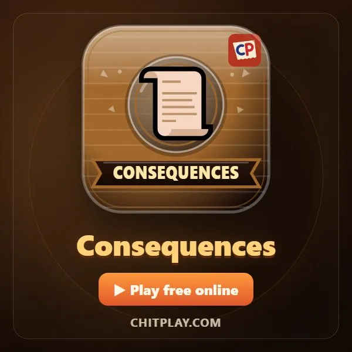
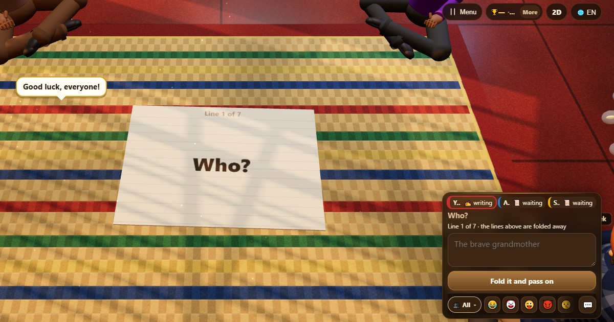

折纸接龙故事 (Consequences)
- 👥 3–8 人
- 聚会游戏
- 🆓
中文指南
在折起的纸上一人一句写故事，最后打开一起读。
English name: Consequences

玩法
- 依次轮流，每人为显示的部分加一句话，看不到前面的句子。
- 和朋友玩时自己输入句子。和陌生人同桌时，从我们写好的句子里选，这样谁也不能发不友善的话。
- 七个部分组成一个故事：谁、遇见了谁、在哪里、各自说了什么、发生了什么，以及世人怎么说。
- 最后故事展开，大家一起读。
计分
不计分：最好的故事赢得全场。
怎样获胜
故事让全桌都笑起来，大家就都赢了。
常见问题
这个名字是怎么来的？
这是一种在折叠纸上玩的传统室内游戏，最后一行讲出“结果”。
陌生人能给我写东西吗？
不能。在公开桌上，大家都从我们固定的句子列表里选择。
玩法
- 游客模式: 不用注册，不用登录。选个名字马上开玩。
- 和电脑玩: 没人的时候，空位由电脑玩家补上。可选简单、普通、困难。
- 在线玩: 坐到公开桌，和来自世界各地的玩家对战。
- 和身边的朋友玩: 在一部手机上开局，分享房间码或二维码，朋友用自己的手机加入。
- 一部手机轮流玩: 手机轮流传：一部手机就够全家一起玩。
其他语言
- हिन्दी: मुड़ी हुई कहानी
- Hinglish: Mudi Hui Kahani (Consequences)
- Español: Cadáver exquisito
- Português: Cadáver esquisito
- Français: Cadavre exquis
- Deutsch: Faltgeschichte
- Bahasa Indonesia: Cerita Lipat
- Türkçe: Katlamalı Hikâye
- Italiano: Cadavere squisito
- 日本語: おりがみ物語
- 한국어: 이어 쓰는 이야기
- Русский: Чепуха
- اردو: کہانی در کہانی
- नेपाली: कथा जोडाइ
- বাংলা: গল্প জোড়া
- English: Consequences · 完整规则（英文）
游戏点子
全部游戏


ChitPlay 中没有真钱、赌注或奖品。积分没有任何价值。